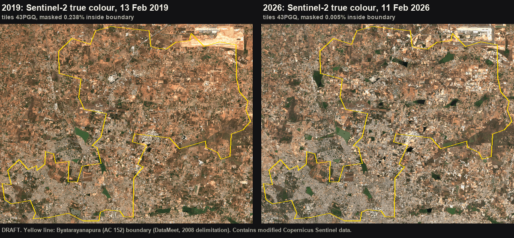
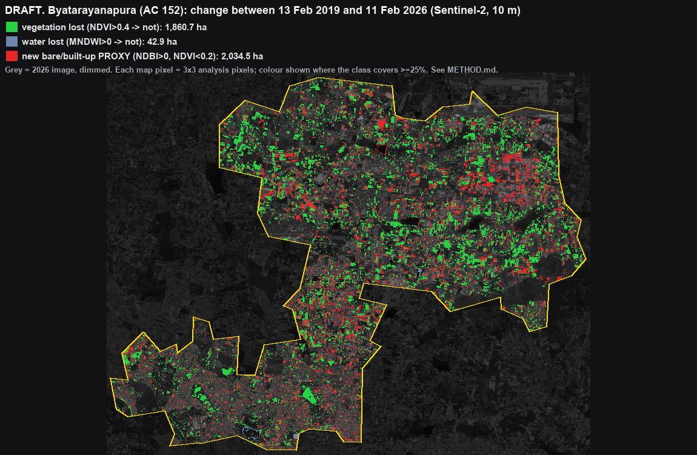
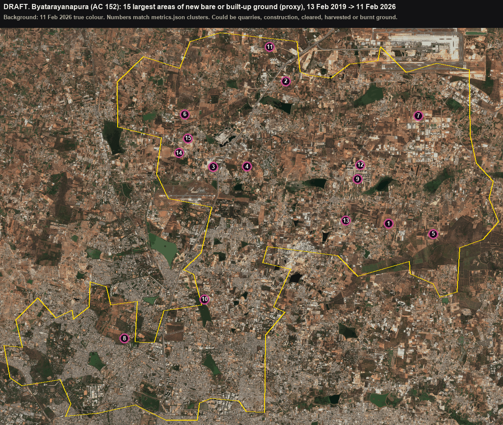

Two cloud-free Sentinel-2 satellite pictures of Assembly constituency 152 in Bengaluru Urban district are compared pixel by pixel at 10 m. They were taken two days apart in the calendar, seven years apart: 13 February 2019 and 11 February 2026, the same dates used for Mahadevapura. The seat mixes city wards in the south with farmland, villages and many lakes in the north. Inside the outlines of the 51 lakes and tanks measured, open water covered 134 ha on the first date and 380 ha on the second; green growing on those lakes, mostly weeds, covered 200 ha and 246 ha. This page measures land cover only and says nothing about who caused any change.
On the 37 clean dates checked, green cover moved 6 to 7 points within a single February. Around 11 to 13 February it stood at 22% in 2019, 32% in 2025 and 27% in 2026, so 2025 to 2026 alone fell 5.5 points. The pair used below shows 5.0 points more green in 2026; other pairs of dates a few days apart give 3 to 24 points, always greener in 2026. The bare or built-up proxy fell 10.1 points in this pair, but only 1.5 to 1.9 points in the pairs around 21 February. Do not quote the tiles below as land-cover change. The lake figures are measured inside fixed outlines and are easier to check, but lakes also fill, dry and grow weeds from season to season.
Share of the constituency with NDVI above 0.4, computed at 20 m on every Sentinel-2 date with less than 1% cloud inside the boundary (tile 43PGQ). Large dots are the two dates used for the tiles and maps. 2025 was greener than 2026 through January and February.


| Area | Hectares | Green 2019 | Green 2026 | Green lost (ha) | Green gained (ha) | New bare (ha) |
|---|---|---|---|---|---|---|
| Inside protected areas and forests (OSM) | 601 | 39.6% | 81.9% | 18 | 272 | 2 |
| Everywhere else | 20,839 | 22.4% | 26.4% | 1,843 | 2,662 | 2,032 |
OpenStreetMap outlines inside the boundary: Marasandra Reserve Forest (365 ha), Jarakabande Sandal Reserve Forest (129 ha), Botanical Garden (26 ha), Bettakote Reserved Forest (21 ha). OpenStreetMap maps about 601 ha of forest and protected land here. Green cover inside it was 40% on the first date and 82% on the second, a jump far larger than outside; a swing that size points to the season on these two dates, so check other dates before quoting it.
| Water body (OpenStreetMap) | Location | Water 2019 | Water 2026 | Change | Green on it 2019 | Green on it 2026 |
|---|---|---|---|---|---|---|
| Unnamed (way/28069768) | 13.1776, 77.6854 | 0.2 | 64.0 | +63.8 | 11.7 | 10.9 |
| Bagaluru Kere ಬಾಗಲೂರು ಕೆರೆ | 13.1401, 77.6581 | 2.6 | 32.5 | +29.9 | 10.1 | 0.5 |
| Doddabommasandra Kere ದೊಡ್ಡಬೊಮ್ಮಸಂದ್ರ ಕೆರೆ | 13.0650, 77.5630 | 0.0 | 27.8 | +27.8 | 19.4 | 6.3 |
| Gummanahalli Lake | 13.1395, 77.6893 | 3.1 | 30.9 | +27.8 | 2.1 | 24.8 |
| Thimmasandra ತಿಮ್ಮಸಂದ್ರ | 13.1705, 77.5875 | 0.0 | 17.5 | +17.5 | 0.4 | 4.2 |
| Doddajala Kere ದೊಡ್ಡಜಾಲ ಕೆರೆ | 13.1737, 77.6471 | 0.0 | 14.6 | +14.6 | 1.0 | 14.5 |
| Unnamed (way/474089079) | 13.1731, 77.7229 | 0.1 | 10.4 | +10.3 | 1.5 | 10.0 |
| Kogilu Lake ಕೋಗಿಲು ಕೆರೆ | 13.1091, 77.6195 | 0.1 | 10.2 | +10.1 | 6.1 | 1.9 |
| Unnamed (way/28069711) | 13.1413, 77.7144 | 0.1 | 8.7 | +8.6 | 10.3 | 32.4 |
| Unnamed (way/1089113278) | 13.1394, 77.6260 | 0.8 | 7.1 | +6.3 | 9.7 | 12.1 |
437 water polygons in OpenStreetMap touch the boundary and 42 have names; those of at least 2 ha are measured. "Green on it" is usually weeds or crops on a dry bed. Tanks fill and empty with each monsoon, so one February picture says little about a tank's long-term state. "Edge" marks a polygon that crosses the boundary; only the part inside is counted.

| # | Hectares | Location (opens map) | Green in 2019 | In OSM forest | Burn index (dNBR) |
|---|---|---|---|---|---|
| 1 | 16.7 | 13.1228, 77.6923 | 58% | 0% | 0.13 |
| 2 | 11.0 | 13.1847, 77.6478 | 2% | 0% | -0.20 |
| 3 | 10.4 | 13.1480, 77.6156 | 22% | 0% | -0.01 |
| 4 | 9.2 | 13.1480, 77.6304 | 45% | 9% | 0.07 |
| 5 | 9.1 | 13.1182, 77.7117 | 3% | 0% | -0.05 |
| 6 | 9.0 | 13.1708, 77.6034 | 28% | 1% | 0.07 |
| 7 | 8.5 | 13.1692, 77.7058 | 12% | 0% | -0.06 |
| 8 | 7.4 | 13.0745, 77.5759 | 93% | 0% | 0.12 |
| 9 | 6.8 | 13.1422, 77.6787 | 72% | 0% | 0.32 |
| 10 | 6.1 | 13.0910, 77.6112 | 42% | 0% | 0.07 |
| 11 | 5.4 | 13.1997, 77.6409 | 35% | 0% | 0.06 |
| 12 | 5.3 | 13.1481, 77.6801 | 37% | 0% | 0.02 |
| 13 | 5.0 | 13.1244, 77.6735 | 52% | 0% | 0.01 |
| 14 | 4.9 | 13.1542, 77.6006 | 36% | 0% | 0.10 |
| 15 | 4.8 | 13.1605, 77.6046 | 57% | 0% | 0.12 |
Each patch went from not bare in 2019 to bare or built-up on the 2026 date. It could be a quarry, construction, a ploughed or harvested field, dry grass, burnt scrub or a drained tank. This analysis cannot tell which and says nothing about cause, ownership or legality. A dNBR above about 0.1 is often seen on burnt ground but also on harvest and clearing. In all, 276 patches are 1 ha or larger and 12 are 5 ha or larger. A blank field-check sheet for these locations is in field_checks.csv in the repo: a photo and one line on what is there turns a proxy into a fact.
Data: Copernicus Sentinel-2 L2A via Microsoft Planetary Computer (Sentinel-2A scene of 13 Feb 2019 and Sentinel-2B scene of 11 Feb 2026, tile 43PGQ); boundary from DataMeet (CC BY 2.5 India); water, forest and protected-area outlines from OpenStreetMap (ODbL). Method, scripts and every number are in research/satellite/byatarayanapura/ in the repo (METHOD.md, metrics.json). DRAFT, 24 Nov 2026.